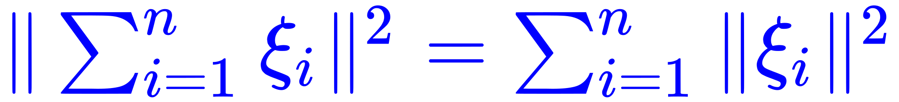

随机变量（关于σ-代数）的正则条件分布和正则分布函数永远存在。
完全可分度量空间（Borel空间）上取值的随机元存在（关于σ-代数）的正则条件分布，特别的，对于空间(ℝn, ℬ(ℝn))和(ℝ∞, ℬ(ℝ∞))存在这样的分布。
按照之前《〈设定集〉注释》惯例，本篇编号又换成全角数字了，同理可证，按惯例应该开始考虑《〈恶补记〉流水账》到底能写多久。这才一年多点，按照三年计划下来，三位数那是肯定的。于是又应景考虑相关的问题，比方说为啥到现在为止《〈恶补记〉正文》都是「（暂无）」状态呢？很简单，因为恶补一遍还没结束呢。
前一篇提到了「预习」之后就是「复习」，还强调其中只有个「屁」的区别，肯定会有「情商负无穷」的读者追问「什么时候学习」。这时候老迈年高的我按照市面上流行的文艺理论，应该目光深邃的凝视天花板，再慈祥和蔼的谆谆教导童年才俊们说「二十年前学了一遍」。之前就说过了，差不多都忘光了也。
如果是「人缘好情商高」的读者，肯定不会问这种话，因为在「识大体顾大局懂政治讲规矩守纪律」的话语体系当中，领导/长辈/龙裔/贵种/一小撮同胞/友邦人士……连放个屁都是香的，所以这帮根红苗正忠君爱国童年才俊，才会得意忘形肆无忌惮的用大拇指搓手机方式到处弘扬且传播我等人民群众「连个屁都留不下」之类主旋律正能量。
之前还提到过，「至少恶补五遍」，当然每一遍都有针对性嘛。正在进行的这一次恶补，目的就是夯实《设定集》之数学基础，主要表现为寻找脑洞，而不是充沛伎俩。现在我连课后习题都未必能做出来，当然比较简单的例外，比方说「正交随机变量族{ ξ1 , … , ξn }满足“毕达哥拉斯”定理：」这种，把定义带进去一步就出来了也。
我的态度是把那些「习题」当作不加证明的「定理」（课文里面到处都是）那样，反正一定能做出来对不对？这就是中央已经提前钦定的伟大光荣正确的结论，谁敢说个不字？于是可以深入揭批字里行间所蕴涵的充沛政治和意识形态内容并引领政治和意识形态斗争新动向了也。
在这砥砺奋进六年来以及之前的若干年里，色目逗哔总是将我的性格特征「言必信行必果硁硁然」歪曲为「顽固保守坚持错误立场不知悔改」，具体在「学术」上，就是倚仗把持了圈内话语权，迫害「持不同学术观点者」，将所有反对意见都斥为「异端」，每次我都迎头痛击。
我还强调了很多次数学渣「职业习惯」内化于心外化于行，包括但不限于「严密的考虑问题」「不惮以最大的恶意揣测」「发掘阴暗面」「预则立不预则废」「谋定而后动」「未算胜先算败」……都被色目逗哔选择性无视了也。每次我「换位思考将心比心」提前揭穿色目势力之阴谋诡计，就能看到色目逗哔恼羞成怒气急败坏，快哉。
哪怕在《设定集》《恶补记》当中都多次强调，为了「激化矛盾制造冲突增加剧情跌宕起伏程度」，总是同时设定两个对立阵营的理论，在每个「突破」的具体时间点和细分领域都是这样。其中一部分「平凡」的内容来自本位面学术史当中的实际案例，而「超凡」的部分就只能自力更生艰苦奋斗自己动手丰衣足食了也。
前述「初等概率论」内容用来解释「正统」的德谟克利特原子论，对立面「异端」纽结原子论需要从其它方向恶补，肯定包括相关「初等拓扑学」内容。
就比方说纽结理论的基本出发点，是把两个「绳头」系在一起，数学上解释为在「无穷远点」连续。也就是说，通常的三维欧式空间「ℝ3」再「∪」上一个「∞」，刚好就是「S3」，这样就能实现在「卡壳世界」的「真相只有一个」大前提下，还能多方下注左右逢源，同时赞助针锋相对你死我活的两套乍一看都伟大光荣正确的理论了也。
顺便多说一句，既然每个「纽结」都被视为在无穷远点连续，那么可以认定每个「原子」都跨越了这个「有限但无边界」的宇宙嘛。注意本位面学术史当中的「纽结原子论」只认定整个纽结都「紧密团结」在一起，为啥我非得设定把「绳头」扯出去还强调「心有多远，就能跑多远」呢？
这就是与「走毕派」歪理邪说「万物皆数」针锋相对的「希帕索斯会」的基本观点「万数皆物」，凡是数学上的结论都可以对应到现实当中。所以，哪怕是「理论」上为了便利起见引入了「无穷远点」，唯心主义「卡壳世界」还就真的以「实践」检验了这条真理，每个「纽结原子」的「疙瘩」蜷缩在局部而「绳头」一直延伸到世界的尽头去了也。
之前那许多科普工作者运用足球（有时候是篮球）上的蚂蚁比喻，企图说服只有二维球面感性认知的人民群众相信本位面宇宙是三维球面嘛，还有莫比乌斯带克莱茵瓶之类《基础拓扑学》课本上前几章就有的「平凡」的内容。
而当代主流物理价值观所批倒批臭的「伪科学」当中，有个霍伊尔「稳恒态宇宙」假说，解释红移现象使用「虚空造物」假设，说每立方米每年一个氢原子就足够补充可视范围内流逝的质量。然后被一票信仰坚定的物理学家指责为「异端」。
这批人缘好情商高的物理学家，各个识大体顾大局懂政治讲规矩守纪律，挪动臃肿的屁股混进体制内占据了充沛的椅子，强调「正统」必须是大爆炸开天辟地，以便为它们头上的主子雅威/阿拉之流异形「占座卡位」，还到处宣扬加尔文主义钦定论歪理邪说。
那么，在之前提到的「S3×S1」之「卡壳时空」设定下，局部又回归了牛顿的「绝对时空观」，所谓红移现象，可以认定为「牛顿第一运动定律」，并且连「第一推动」的假设都不需要。于是「虚空造物」一点都不奇怪，就是脱离视野的物质又从第四个空间维度里面冒出来的嘛。
之前我说所谓「大爆炸」是当代主流物理价值观通过观测数据「不惮以最大的恶意揣测」的感性认识直觉理解，没有任何唯物主义证据，纯属唯心主义の心想事成自由心证随心所欲「有錢是真的能為所欲為的.gif」，并不惮以最大的恶意揣测其背后都有亡我之心不死の帝国主义势力范围内各种持有不可告人之目的の神棍指使。
我的发言到处被以「政治敏感」理由而「亦当删去」，顶多是「民科」「杠精」「反社会人格」。而与此同时各个宣传阵地还在铺天盖地炒作「作者最大剧本钦定导演叫人三更死谁敢留人到五更」「朕即国家我就是大局你们要顾全大局」，奇哉。
截止到目前，刚看完施利亚耶夫《概率（第一卷）》第二章，又头疼了三天。今年比去年更忙，需要「晚绑定懒求值」临时找补的场合更多，随时随地都能体会到「世界是精神的，精神是数学的，数学精神之间是存在着普遍联系的」。
抄书一段（第239、241页）：
随机变量（关于σ-代数）的正则条件分布和正则分布函数永远存在。
完全可分度量空间（Borel空间）上取值的随机元存在（关于σ-代数）的正则条件分布，特别的，对于空间(ℝn, ℬ(ℝn))和(ℝ∞, ℬ(ℝ∞))存在这样的分布。
一般来说，无论什么教材，写到这里的时候，前面肯定已经出现过「几何概率」的典型问题「布封（Buffon
）掷针」了也，通常是用来讲解随机变量独立性。这个问题之所以典型，就是因为理论上假设「距离」和「角度」俩随机变量是独立的，而实践中刚好如此。所以本位面真有唯物主义实验5000次估计圆周率，精度居然还不错。
看到这里的时候，第一反应还是完善设定，准备随后在这个结论当中的「空间」里面再想办法找个茬装备「内积」并诱导「范数」，那当然就是更贴近「卡壳世界」的希尔伯特空间了嘛。
正因为〈流水账〉是记录恶补中随时随地应景涌现的心得体会，整个过程中肯定会经常出现随后发现还没来及看的内容当中已经指出了前面当作别出心裁记录的感想，还可能会出现忽然看到否定之前思路的内容。这也是「〈正文〉（暂无）」的另外一个原因。
后面几节果然如此，真的讲到了相关内容，尤其是「Lp」空间，还因为正态分布的独特之处提醒结果极大充沛的领域是「L2」空间相关理论。那么「纯粹数学结构」更可以贴近现实了嘛，无论本位面还是架空设定。于是决定相关感想暂时不展开，等多头疼一段时间之后再说。
再抄书一段，第244页（大意）：
广义贝叶斯定理。特别的，设σ-代数是随机变量生成的。对于离散型随机变量和绝对连续型随机变量举例。但是没提「奇异」连续型。
到这里的感想就是，看来还得抽空补「测度论」。对于离散型随机变量使用「计数测度」之类再弄出正则条件分布，没准可以投影到「卡壳世界」中得出一些接近本位面当代主流物理价值观的结论。而在通常情况下，应该使用「依赖参数」的概率测度引进额外的「自由度」。
公理化概率论使用的模型，其实性质已经很好了，这些内容都是实分析「常识」，还不算太过奇葩。就比方说「收敛」都有依「测度」「概率壹」「阶矩平均」「分布」四种，强弱各有不同。这些「常识」是之前做设定的时候，「险些」顺手写上去的，在注释里面提到了这事。
比方说，原来的思路就是，不同「角色」按照贝叶斯方法论，从自己独立的人格和意志出发用自己的脑壳思考，处理自己获得的「片面」信息，哪怕料敌从宽并且严密的考虑问题，但是数学上就能出现所揣测的「不完全」结论未必收敛到「真相只有一个」当中的结果，甚至南辕北辙的情况都有可能。
这也就和《设定集》宗旨「不同角色向着不同方向探索取得不太大的进展」相吻合，更可以「激化矛盾制造冲突增加剧情跌宕起伏程度」，各种「神转折骚操作」也会自然而然的出现，不需要生搬硬套勒令导演亲自入戏强行机械降神以安插「胡乱的深仇大恨」（据色目逗哔揭发为王朔批判查博导使用措辞）。
对于「奇异」型的结论目前还没有思路，脑洞倒是有。因为在那「上级」空间中离散、连续、奇异三种分布函数是越来越充沛的（参考《〈设定集〉注释（十八）》最后的摘抄），还有泛函分析「常识」保证啥空间总是充沛了足够多的有界线性泛函之类。
于是可以揣测，之所以「真·超凡」乍一看对本位面没有影响，应该是（按照大数定律、中心极限定理）被「掩盖」在正态分布之下，并且误差远小于当代主流物理价值观唯物主义实验精度。